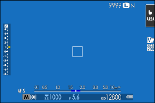
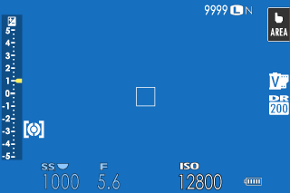
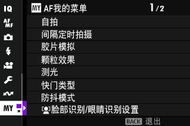
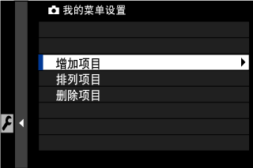
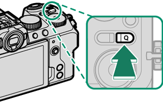
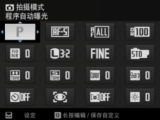
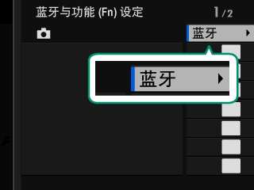
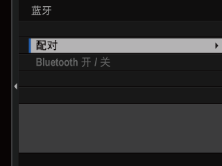
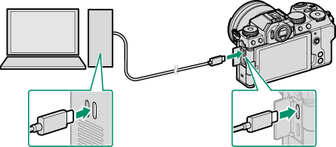
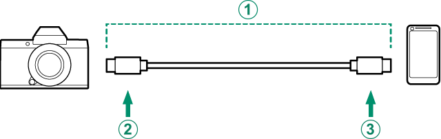

Ⅰ 本课目标Objectives
- 01过一遍设置菜单六大项，改掉那些「一开始就该改」的默认值
- 02把最常用的 16 项塞进「我的菜单」，10 项放进 Q 菜单
- 03掌握 Fn 按钮的指派方法（含按住 DISP/BACK 的快捷入口）
- 04用蓝牙配对手机，跑通「拍完即传」
- 05用 USB 连电脑：读卡器、网络摄像头、连线拍摄三种模式
- 06用 X Acquire 备份设定，用 X RAW STUDIO 借用机身引擎处理 RAW
- X-S20
- 智能手机 + FUJIFILM XApp
- USB-C 线
- 计算机
Ⅱ 设置菜单：六个子菜单，改完更顺手Setup Menu
设置菜单是 D 选项卡，下面分六块：用户设置、按键音设置、屏幕设置、按钮/拨盘设置、电源管理、保存数据设置。
A 用户设置（13 项）
| 项目 | 用途 / 建议 |
|---|---|
| 格式化 | 新卡第一件事。受保护照片也会被删除；格式化期间别开电池盖 |
| 区域设定 / 日期时间 / 时差 | 出行前设好时差；时差只切换时钟显示，不改文件时间戳之外的设定 |
| 语言（Q P） | 简体中文 |
| 我的菜单设置（照片 / 视频） | 编辑 E 选项卡，最多 16 项 |
| 传感器清洁 | 执行 / 开启时 / 关闭时。开机会多耗几秒，但能减少落灰 |
| 电池寿命 | 0–4 的数字，越高越旧。数值大就该换电池了 |
| 按键音和闪光 | 选「关闭」可一次性禁掉扬声器、闪光灯、辅助灯与自拍灯（教堂、会议、拍鸟） |
| 固件升级 | 见第 9 课 |
| 重设所有 | 静态菜单重置 / 视频菜单重置 / 设置重置 / 初始化。注意初始化会清掉自定义白平衡之外的一切 |
| 调节 | 查看型号与认证信息 |
B 屏幕设置（24 项，挑最要紧的）
| 项目 | 为什么值得改 |
|---|---|
| VIEW MODE 设置 | 眼传感器 / 仅 EVF / 仅 LCD / 限 EVF。翻转屏自拍时建议「仅 LCD」 |
| EVF / LCD 亮度、色彩 | 亮度可选「自动」，色彩按偏好微调 |
| 自动旋转显示屏 | 竖拍时显示是否跟着转 |
| 手动模式下预览曝光/白平衡 | 第 3 课讲过：M 档想让屏幕反映真实曝光就开；用闪光灯时别开 |
| 自然实时视图 | 关掉可看到胶片模拟、白平衡等效果的实时预览；想「所见即所得」就关掉它 |
| F-Log 查看助手 | 拍 Log 时给一个近似还原的监看效果（不影响文件） |
| 电子水平仪设定 | 显示 2D / 3D 水平线，风光构图必开 |
| 取景框 | 九宫格 / 24 格，风光三分法很实用 |
| 自动旋转回放 | 竖拍照片回放时自动转正（配合第 2 课「图像旋转」） |
| 对焦距离指示单位 | 米 / 英尺 |
| 显示自定义设置 | 决定屏幕上出现哪些指示（含对焦距离指示） |
| 大尺寸指示器模式（EVF / LCD） | 把关键数值放大，适合戴眼镜或强光下 |
| 位置信息 | 显示手机同步来的地理标记 |
| Q 菜单背景 | 透明 / 背景色 |


C 按钮/拨盘设置（17 项，自定义的核心）
| 项目 | 选项与建议 |
|---|---|
| 对焦杆设置 | 中央按下：关 / 编辑对焦区域 / 变焦 / 重置到中心；俯仰：关 / 直接 AF 点选择 / 编辑对焦区域 |
| 编辑/保存快捷菜单（照片 / 视频） | 改 Q 菜单里放什么 |
| 功能(Fn)设定 | 给 6 个功能按钮改指派（第 Ⅳ 节详述） |
| 电动变焦镜头功能(Fn)设定 | 带 Fn 键的电动变焦镜头 |
| 命令转盘设定 | 改前/后指令拨盘在 S / A / M 下各管什么（第 3 课那张表的底层） |
| 命令拨盘方向 | 反转旋转方向（顺时针=加大 还是 减小） |
| 快门 AF / 快门 AE | 关掉快门 AE 可让连拍每张重新测光（第 5 课） |
| 无镜头拍摄 / 无卡拍摄 | 转接环玩老镜头时可能要用；日常关着更安全 |
| 镜头变焦/对焦设定 | 反转对焦环方向、变焦环方向 |
| AE/AF-LOCK 设定 | 按住锁定 / 开关切换（第 3 课） |
| AWB 锁定模式 | 白平衡锁定方式 |
| ISO 按钮设定 | 可改为「选择和智能手机传输指令」等 |
| 触摸屏设置 | 开 / 关触控，及相关子项（第 4 课） |
| 功能锁定 | 锁定部分按钮防误触 |
D 电源管理 · 按键音 · 保存数据
| 子菜单 | 项目 | 建议 |
|---|---|---|
| 电源管理 | 自动关机 | 5 / 2 / 1 分钟、30 / 15 秒、关。风光等云时设长一点 |
| 性能 | 增强 / 普通 / 节能。增强提升对焦与取景性能但更费电 | |
| EVF/LCD 增能设置 | 弱光优先 / 分辨率优先 / EVF 帧率优先(100P) | |
| 高温自动关机选项 | 标准 / 高。选「高」能延长录制，但长时间接触机身可能低温灼伤，建议上三脚架 | |
| 按键音设置 | 各类音量 | AF 嘟嘟声、自拍、操作音、录制起止音、电子快门音量与音色、回放音 |
| 四通道音频播放 | 四声道文件的回放方式 | |
| 保存数据设置 | 画面计数规则 | 连续 / 清零。选连续可减少重名文件 |
| 编辑文件名 | sRGB 用 4 位字母（默认 DSCF），Adobe RGB 用 _ + 3 位字母 | |
| 选择文件夹 | 选择或新建（5 位字符）文件夹 | |
| 版权信息 | 写入 Exif 的作者与版权，只影响之后拍的照片 | |
| 地理标记 | 手机同步位置写入 Exif |
拿到相机先改这 6 项（省掉以后无数麻烦）
- 画面计数规则 → 连续（避免多卡重名）
- 版权信息填上你的名字
- 自动旋转回放 → 开（竖拍不用手动转）
- 电子水平仪 → 2D 开（风光构图）
- 性能 → 增强（除非你整天在外没电充）
- 按键音和闪光 → 关闭做一个快捷入口（拍鸟、会议用）
Ⅲ 我的菜单：把 16 项常用塞进一页My Menu
E 选项卡（我的菜单）默认是空的，只有你添加过项目后才出现。它适合放「改得不频繁但每次都要翻很久」的项目。
推荐放进去的内容（风光相）：传感器清洁 · 格式化 · 间隔定时拍摄 · 快门类型 · 防抖模式 · 减少闪烁 · 显示自定义设置 · 电子水平仪设定 · 自动旋转回放 · 版权信息 · 画面计数规则 · 固件升级 · 电池寿命 · 保存数据设置。你会发现它们都属于「偶尔改一次，但每次都要翻三层」。


Ⅳ Q 菜单与 Fn 键：两个「快」系统Q Menu & Fn
A Q 菜单（按 Q 呼出）
| 操作 | 结果 |
|---|---|
| 按 Q | 呼出快速菜单（照片与视频两套不同内容） |
| 对焦棒选项目 + 后指令拨盘转 | 改设定 |
| 按住 Q | 跳到「编辑/保存快捷菜单」，改 Q 菜单里放什么 |
| 再按 Q | 退出 |
照片 Q 菜单默认 16 项：拍摄模式、对焦模式、自动对焦模式、动态范围、高 ISO 降噪、图像尺寸、图像质量、胶片模拟、高光色调、阴影色调、色彩、锐度、自拍、脸部识别/眼睛识别、对象检测、EVF/LCD 亮度。视频 Q 菜单默认 8 项：拍摄模式、S.S.（视频优化控制）、视频分辨率、白平衡、胶片模拟、ISO、帧率、白平衡色温。
想禁用 Q 按钮：按钮/拨盘设置 > 功能(Fn)设定 > Q 按钮设定 → 无。也可以把 Q 的功能指给别的功能键。
B Fn 键（6 个物理按钮 + 拨盘 + 触摸手势）
| 按钮 | 出厂默认 |
|---|---|
| A t（动画录制）按钮 | 视频录制释放 |
| B ISO 按钮 | ISO |
| C Q（快速菜单）按钮 | 快捷菜单 |
| D Fn 按钮 | 白平衡 |
| E AEL 按钮 | 仅限 AE 锁 |
| F AFON 按钮 | AF-ON |
最快改 Fn 的方法：按住 DISP/BACK
在任何拍摄界面按住 DISP/BACK 不放，会直接弹出「功能按钮指派」对话框 → 选按钮 → 选功能。不用进菜单三层。同样的指派也可以在「按钮/拨盘设置 > 功能(Fn)设定」里做。
除了 6 个按钮，还可以指派给：Fn 拨盘（出厂是胶片模拟）、触摸功能动作 T-Fn1–T-Fn4（在屏幕上四向轻拨）、镜头功能按钮（部分镜头有）。这套系统叫「功能控制」。


我建议这样改（风光 + Vlog 双修）
- Fn 按钮 → 对焦模式（第 4 课说过它在菜单深处，最该有快捷键）
- ISO 按钮 → 保留 ISO
- Q 按钮 → 保留快捷菜单
- Fn 拨盘 → 保留胶片模拟（富士最舒服的创作节奏）
- AEL → 保留 AE 锁；AFON → 改「仅限 AF 锁」（第 3 课）
- 把一个触摸手势（T-Fn1）设为斑纹开关，Vlog 时随手开关
Ⅴ 连接总览：七种把照片送出去的方式Connections
| 功能 | 怎么连 | 用途 |
|---|---|---|
| 智能手机 App（蓝牙） | 蓝牙配对 → 传图时自动切 Wi-Fi | 外拍即时分享、手机遥控 |
| USB 读卡器 | USB 线接手机或电脑 | 没有读卡器时的应急传原图 |
| 网络摄像头 | USB 接电脑 | 直播、会议 |
| 连线拍摄（Tether） | USB 或无线局域网 | 棚拍、静物，电脑直接收图 |
| 上传至 Frame.io | 无线局域网 | 团队远程审片（Camera to Cloud） |
| RAW 处理（X RAW STUDIO） | USB | 用机身引擎在电脑上处理 RAW |
| 保存和载入设定（X Acquire） | USB | 备份/恢复整套相机设定 |
指示灯也能表达连接状态：闪烁红色等状态用于表示 Frame.io 等设备的连接情况（完整状态见第 1 课那张表与官方《纵览》）。
Ⅵ 手机配对：一次做好，长期受用Bluetooth
前提：手机上装好 FUJIFILM XApp（或旧版 Camera Remote）。然后在拍摄模式下按 x（蓝牙）按钮。


三个省电与稳定性要点
- 不用蓝牙时关掉 Bluetooth 开/关，省电明显。
- 无线频率可选 2.4GHz 或 5GHz；5GHz 更快但部分国家/地区限制室外使用某些频段。传大文件优先 5GHz。
- 「飞行模式」可一次性关掉 Wi-Fi 与蓝牙——飞机上、需要绝对安静时用。
Ⅶ USB 三模式：读卡器 / 网络摄像头 / 连线拍摄USB Modes
关键在于「网络/USB 设置 > 连接模式」选哪个。选错了表现就是「连上了但没反应」。
| 连接模式 | 用途 | 前置设置 |
|---|---|---|
| USB 读卡器 | 把相机当读卡器，复制照片到电脑或手机 | USB 电源/通讯设置 = 自动 或 电源关/通信开 |
| USB 网络相机 | 当网络摄像头直播 | 同上；然后用 USB 线连电脑并开机，在直播软件里选相机 |
| USB TETHER 自动拍摄 | 连线拍摄；电脑关闭时自动退回存卡 | 配合 Lightroom + Tether 插件 / X Acquire / Capture One |
| USB TETHER 拍摄固定 | 连线拍摄；断线后仍保持连线模式 | 注意：断线后不会存卡，拍不到东西 |
| USB RAW 转换/备份恢复 | X RAW STUDIO 处理 RAW；X Acquire 备份/恢复设定 | 同一模式服务两个软件 |
| 无线 TETHER 拍摄固定 | 通过无线局域网连线拍摄 | 先在「网络设置」连上 Wi-Fi |
USB 供电/设置
这个选项决定 USB 是「供电」还是「通信」优先。要传数据就必须让它能通信（自动 / 电源关·通信开）；若你只想要边拍边充电，可以选只供电。找不到「不显示电源图标」的原因，多半就是这里设错了。


Ⅷ 网络设置与 Frame.ioNetwork
| 项目 | 要点 |
|---|---|
| 接入点设置 | 简单设置（WPS 式）/ 手动设置（从列表选 或 输入 SSID） |
| IP 地址设置 | 自动 / 手动（IP、子网掩码、网关、DNS） |
| Frame.io Camera to Cloud | 连接 / 断开 / 获取配对码（在 Frame.io 网页端输入此码即连上）/ 选择文件类型 |
| 重置无线设置 | 把所有无线相关设定清空，排查连接问题时用 |
| 信息 | 查看 MAC、固件等网络信息 |
Frame.io 适合谁
它解决的是「片子还在卡里，客户/导演就要看」的问题——相机通过 Wi-Fi 直接把代理文件传到云端项目。个人用户可能一年用不上，但如果你接商单、团队协作，这是 X-S20 少见的「专业工作流」功能。
Ⅸ 迁移提示From Sony / Canon
自定义与连接，和索尼 / 佳能最不一样的 5 点
- 三个快捷系统并存：我的菜单（深层项目）、Q 菜单（常用参数）、Fn 键（单项直达）。索尼只有 Fn 菜单 + 我的菜单，富士多了一个「我的菜单最多 16 项」的独立页面。
- 按住 DISP/BACK 直接改 Fn：这是富士的隐藏捷径，索尼要进菜单。
- Fn 拨盘可以指派：不只是一个物理拨盘，还能改成任意功能。
- 连接模式的「选一个」逻辑：读卡器 / 网络摄像头 / Tether / RAW 转换 是互斥的，必须手动切换。索尼多数是插上自动识别。
- X Acquire 备份设定：换机、升级固件前备份整套配置。索尼有 Save/Load Settings，但富士这个可以跨机型部分迁移。
Ⅹ 课后练习Exercise
-
01
简答：不改菜单的情况下，最快的「给某个按钮换功能」的操作是什么？
参考答案
在拍摄界面按住 DISP/BACK 不放，直接弹出功能按钮指派对话框 → 选按钮 → 选功能。也可走「按钮/拨盘设置 > 功能(Fn)设定」。
-
02
判断：把「连接模式」设为「USB TETHER 拍摄固定」后，即使拔掉 USB 线，相机也会把照片存在卡里。
参考答案
错误。选「拍摄固定」时断开连接，相机仍以连线模式运作，不会记录任何照片。想要断线自动存卡，应选「USB TETHER 自动拍摄」。
-
03
选择：想用手机在拍摄现场即时收到刚拍的照片，最少要做对哪两件事？
参考答案
① 完成蓝牙配对（相机 x 按钮 → 蓝牙 → 配对，双向代码一致）；② 在网络/USB 设置里把「自动图像传输指令」设为开（可同时开「调整为智能手机用图像大小」压缩上传）。
实操任务（一次做完，终身受用）
① 把「我的菜单」填满你选的 12–16 项并按使用频率排序；② 把 Fn 按钮改为「对焦模式」；③ 用 X Acquire 备份一次设定到电脑（这是你的「后悔药」）。做完这三件，你的 X-S20 才算真正属于你。
Ⅺ 出处与延伸Sources
- 本课对应的官方说明书页面（主教材）
- 用户设置 · 按键音设置 · 屏幕设置 — 设置菜单前半
- 按钮/拨盘设置 · 电源管理 · 保存数据设置 — 设置菜单后半
- 快捷选项 · 我的菜单 · 快速菜单 · 功能控制 — 三个快捷系统与 Fn 指派
- 纵览 · 连接智能手机（蓝牙） · 连接智能手机（USB） — 连接能力与手机配对
- 将相机用作网络摄像头 · 连线拍摄 · 上传文件至 Frame.io — USB 三模式与云端上传
- RAW 处理 · 保存和载入设定 · 网络/USB 设定菜单 — X RAW STUDIO / X Acquire / 网络设定
- 版权说明
- 本课插图均取自 FUJIFILM 官方在线说明书，© FUJIFILM Corporation，仅用于个人学习。
学习提醒
最后一课收尾：镜头、闪光灯、散热器怎么选，相机怎么保养，固件怎么升，出问题怎么查。学完那课，这本「说明书」你就真正读完了。